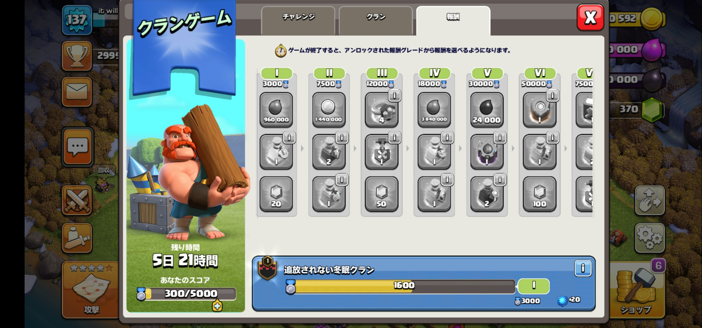
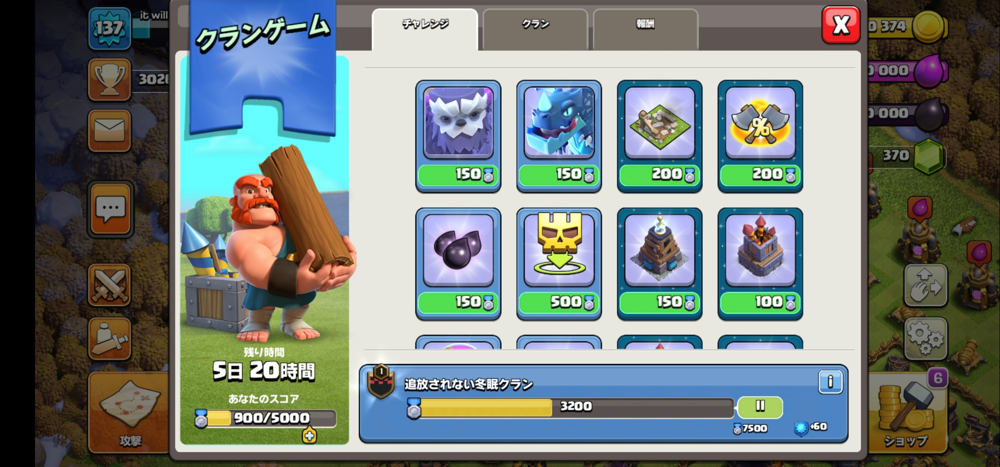
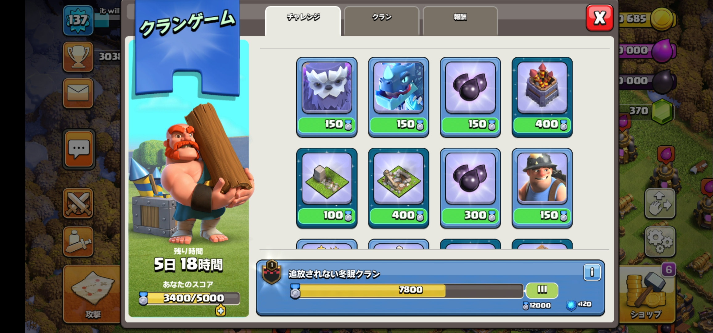
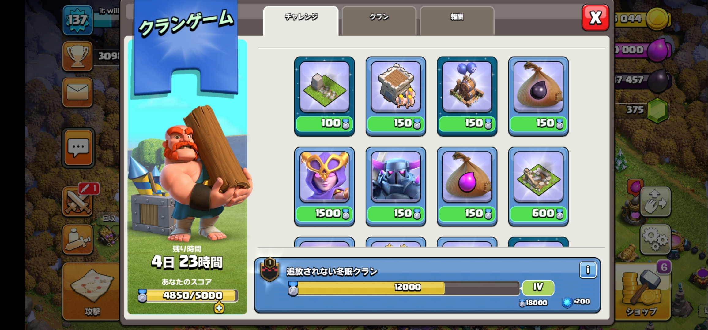
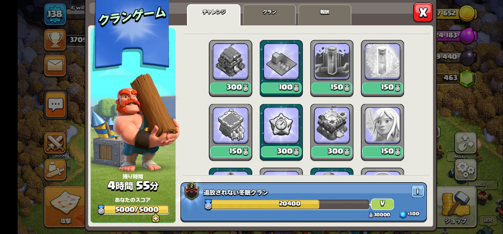

シングルプレイでクランレベル２を目指すなら、クランゲームと考えますよね？
では、クランXPはどれくらい得られるのか？
達成レベルⅠ、Ⅱ、Ⅲ、Ⅳ、Ⅴの順に、20,60,120,200,300XPです。
以下画像です。サイズ大きいままなので申し訳ないです。おいおい圧縮する予定です。
    これ以上は到達できなかったため、不明です。
ゲームのサブアカウントには、Gmailのエイリアス機能がおすすめですよ。事前の設定なしにすぐ使えます。方法は各自で検索を。